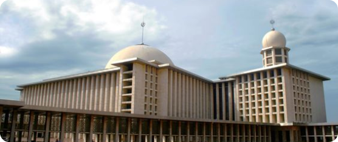

Do'a Memasuki Masjid

أَعُوْذُ بِاللهِ العَظِيْمِ وَبِوَجْهِهِ الْكَرِيْمِ وَسُلْطَانِهِ الْقَدِيْمِ مِنَ الشَّيْطَانِ الرَّجِيْمِ. بِسْمِ اللهِ وَالْحَمْدُ لِلهِ. أَللَّهُمَّ صَلِّ وَسَلِّمْ عَلَى سَيِّدِنَا مُحَمَّدٍ وَعَلَى آلِ سَيِّدِنَا مُحَمَّدٍ. اَللَّهُمَّ اغْفِرْ
لِي ذُنُوْبِي وَافْتَحْلِي أَبْوَابَ رَحْمَتِكَ
A'udzu billahil'azhim wa biwajhihil karim wa sulthanihil qadim minas syaithanir rajim. Bismillahi wal hamdulillah. Allahumma shalli wa salim'ala sayyidina muhammadin wa'ala ali sayyidina muhammadin. Allahummaghfirli dzunubi waftahli abwaba rahmatik.
Artinya: "Aku berlindung kepada Allah Yang Maha Besar, kepada Dzat-Nya yang Maha Mulia, dan kepada kerajaan-Nya yang sedia dari setan yang terlontar. Dengan nama Allah dan segala puji bagi Allah. Wahai Tuhanku, berilah salawat dan sejahtera atas sayyidina
Muhammad dan atas keluarga sayyidina Muhammad. Wahai Tuhanku, ampuni untukku segala dosaku. Buka lah bagiku segala pintu rahmat-Mu."